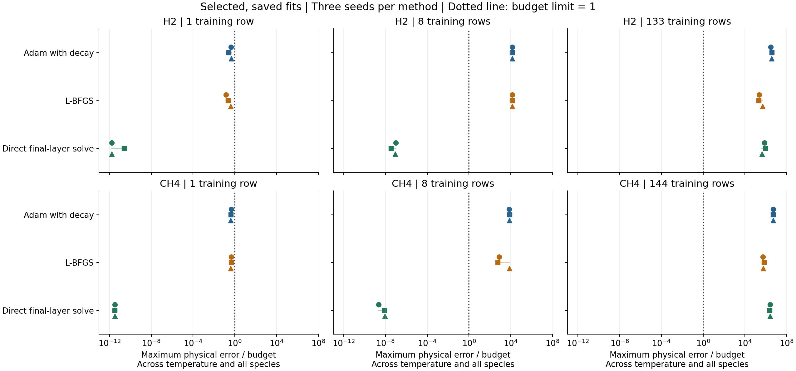
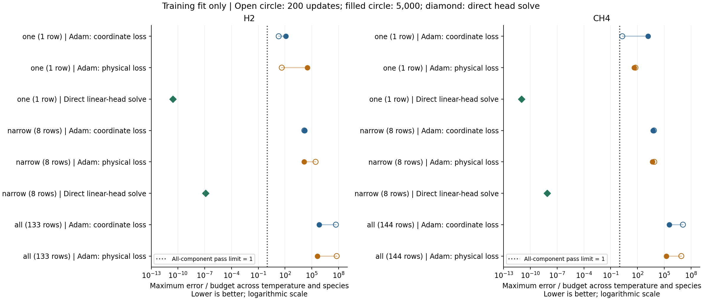
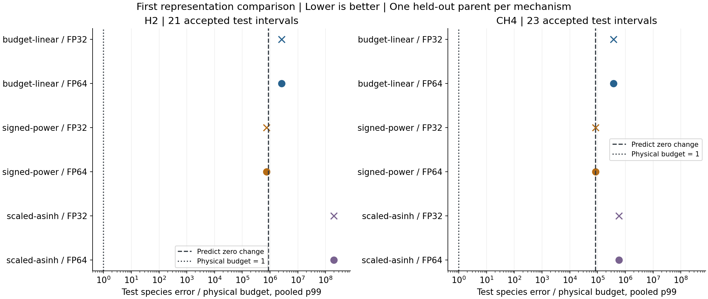
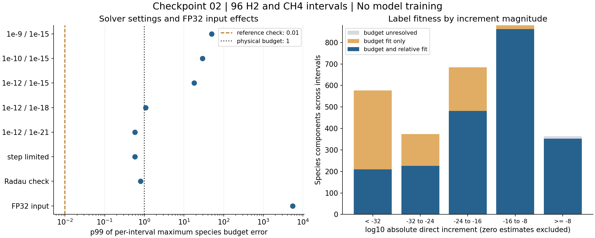
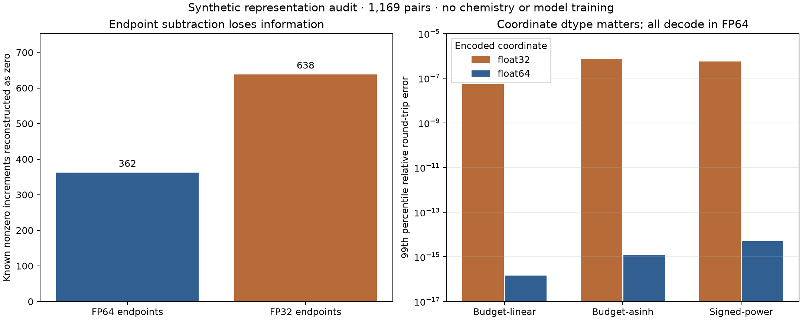

A shared place to review the evidence, discuss scientific choices and follow experiments. The working direction is error-budget-aware coordinates, residual approximation, stable reconstruction and controlled integration.
All methods now save passing one-example fits across three seeds. Direct final-layer solving also passes the eight-example sets. Neither iterative method passes those sets, and no method passes all existing training rows. The milestone is partial.

Read the results and dataset expansion gates · Measured results
The narrow training sets can be represented by the model. Some one-example Adam runs briefly meet species budgets, then lose that accuracy. No final Adam fit meets every budget. This is a training-only diagnosis, not a generalization result.

12 matched models compare budget-linear, signed-power and scaled-asinh targets in FP32 and FP64. Chemistry and training ran on lh40902. This small test uses one held-out parent per mechanism.

Read the step-by-step explanation and results · Download measured metrics
96 intervals ran on lh40902. Of 3,024 species increments, 3,012 passed the reference-agreement check. 2,132 also passed the stricter relative-error mask. These checks are not rigorous error bounds.

This reference-only checkpoint did not include model training or full-grid generation.
Across 1,169 synthetic state/increment pairs, 362 known nonzero increments disappear when added to the initial state in FP64. Direct increment coordinates preserve them, but coordinate compression can amplify inverse-rounding error.

Scope: numerical representation only. No chemistry solver or model training was evaluated. Asinh's possible learning benefit remains an experimental question.
Open the complete report · Download metrics and synthetic inputs · Discuss this result
Use the existing training rows to establish a scalable recipe, then test modest data growth on independent parents. The selected NH3/CH4 mechanism remains pending source verification. Review checkpoint 02.